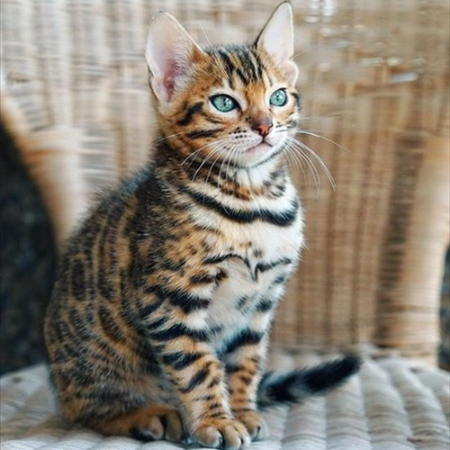

人気の猫種ランキング
1位 雑種(ミックス)
人気1位は雑種(ミックス)の猫。
かわいい。
日本で飼われている猫の約7割は雑種との報告もあり、日常で接する猫たちの大多数は雑種とのこと。
キジトラ、白黒、茶トラ、三毛などいろいろなバリエーションがある。
2位 スコティッシュフォールド
人気2位はスコティッシュフォールド。
耳がかわいい。
ちょこんと前向きに折れ曲がった不思議な耳が特徴的。
おだやかでおとなしい。
3位 マンチカン
人気3位はマンチカン。
手足かわいい。
短い足と、まるまるした顔が特徴的なマンチカン。
足は短いがジャンプ力には自信あり。
4位 アメリカンショートヘア
人気4位はアメリカンショートヘア。
模様がかわいい。
大きくて明るい人なつこそうな顔と、筋肉質の頑丈なボディをもつ。
温厚で物怖じしないつよい猫。
5位 ノルウェージャンフォレストキャット
人気5位はノルウェージャンフォレストキャット。
もふもふでかわいい。
長毛で体も大きく、穏やかで優しい性格。
普通の猫は約1年で成猫になるが、ノルウェージャンフォレストキャットは成熟するまで3～5年かかるという。
6位 ブリティッシュショートヘア
人気6位はブリティッシュショートヘア。
まるくてかわいい。
豊満な頰、骨太で力強い四肢に、コロコロとした体付きが印象的。
もともと狩猟能力に優れ、農家などで飼われていたこともあり、賢いことでよく知られている。
7位 ラグドール
人気7位はラグドール
目が青くてかわいい。
白くてふわふわした長毛と、輝くブルーの瞳が優美なラグドール。
体は大きくて、心やさしいラグドールは、人好きで比較的動きも穏や。で、お手入れも楽と、飼いやすい猫。
8位 ロシアンブルー
人気8位はロシアンブルー。
凛々しくてかわいい。
気品にあふれた表情、エメラルドグリーンの目色、均整のとれた体型など、まさに北方のプリンス＆プリンセスと呼ぶにふさわしい猫。
賢くあまり鳴き声をあげないことから「ボイスレスキャット」と呼ばれる。
9位 ペルシャ
人気9位はペルシャ。
鼻がかわいい。
短くつぶれた鼻に、くりっとした瞳、長くて絹のような艶やかな被毛が印象的な猫。
おとなしく控えめで、「長毛猫のキング＆クイーン」と称される。
10位 ベンガル

人気10位はベンガル。
ワイルドでかわいい。
大きな体型にしては小さ目の頭部、ヒョウのような引き締まった体。小型の猫科動物を彷彿とさせる野性味が魅力。
野性的な面を残しつつも温和でフレンドリーな、遊び好きな猫。